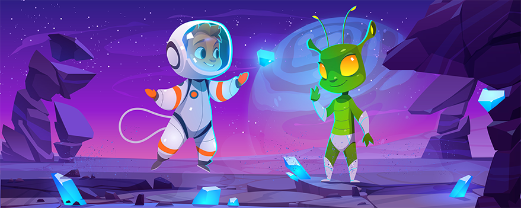

世界場景

共鳴水晶森林
這片神秘的森林由聲音水晶構成，每當微風吹過，便會發出天籟般的和聲。 許多聲音法師來此修練，學習與自然音律的共鳴之道。
回音峽谷
峽谷的岩壁具有完美的聲學特性，能夠將聲音放大並保持純淨。 這裡是舉辦聲音對決的絕佳場所，也是測試聲音技巧的試煉之地。

數位都市
現代化的電子都市，建築物由光線與音波構成。街道上響起的不是車聲， 而是住民們日常的音律交流，形成了城市獨特的聲音風景。

靜寂廢墟
這些廢墟見證了聲音力量被濫用的後果。過度的聲音摧毀造成了永恆的靜寂， 提醒著所有人聲音的力量必須謹慎使用。